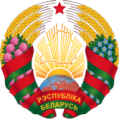
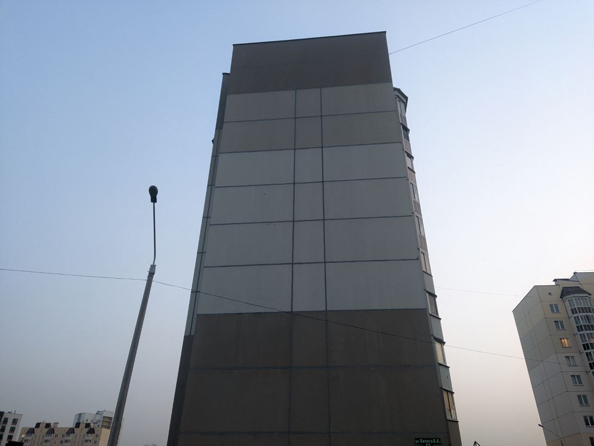
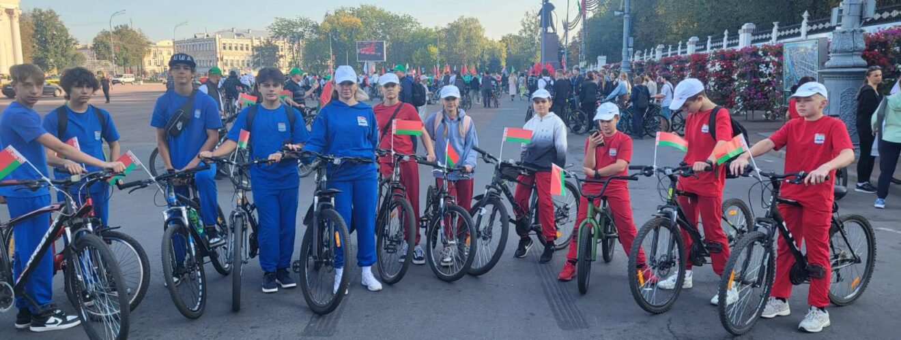

Дзяржаўныя сімвалы Беларусі

Сцяг Рэспублікі Беларусь
Сцяг Беларусі сімвалізуе гераічнае мінулае і светлую будучыню. Чырвоны колер-гэта колер пралітай крыві за свабоду, зялёны-сімвал прыроды і свету.

Герб Рэспублікі Беларусь
Герб Беларусі - гэта сімвал адзінства народа і яго імкнення да міру. Малюнак сонца, вянка з пшанічных каласоў і карты краіны.
Старонкі інтэрнэт-партала:

Карта муралаў
Адкрыйце для сябе муралы Гомельскай вобласці, сімвалы гісторыі і патрыятызму, і іх унікальныя панарамы.

Памяць аб героях
Гісторыя вызвалення Беларусі ў часы Вялікай Айчыннай вайны, відэа-віншаванне з 80-годдзем вызвалення Беларусі ад навучэнцаў 21 школы.

Перспектыўныя месцы
Перспектыўныя месцы для новых муралаў і іх значэнне для гарадскога аблічча.

Падзеі
Апошнія навіны школы, патрыятычныя падзеі і мерапрыемствы.

Зваротная сувязь
Звяжыцеся з намі, пакіньце свае прапановы і каментары.